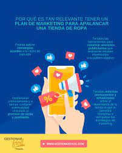
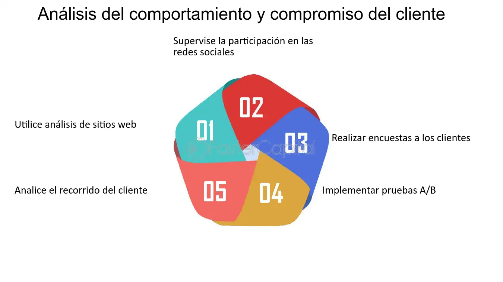
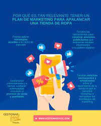
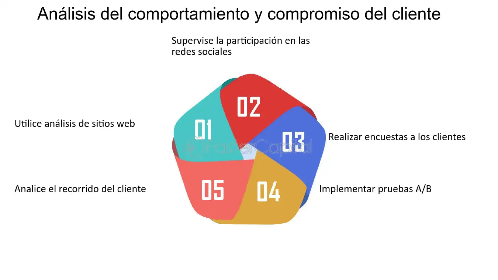

En el mundo competitivo de la moda, el marketing efectivo es clave para destacar tu marca entre la multitud. Este tutorial te enseñará las estrategias de marketing más relevantes y eficaces para promocionar tus diseños de moda en línea. Desde las redes sociales hasta la publicidad pagada y la colaboración con influencers, descubre cómo llevar tu marca de moda al siguiente nivel.
Perfil de maraca y catalogo de productos
La aplicación podría permitir a las marcas de ropa crear perfiles detallados que muestren su historia, valores, estilos y colecciones. Los usuarios podrían explorar un catálogo de productos que incluya imágenes, descripciones y precios de las prendas disponibles para la compra.
Ofertas y promociones especiales
BEC podría proporcionar a las marcas de moda la capacidad de lanzar ofertas y promociones exclusivas a través de la aplicación para atraer y retener a los clientes. Esto podría incluir descuentos por tiempo limitado, cupones de descuento, ventas flash y más.
Comentarios y valoraciones
BEC podría permitir a los usuarios dejar comentarios y valoraciones sobre los productos que han comprado, lo que proporcionaría información útil a otros compradores potenciales y ayudaría a construir la reputación de la marca.
Integracion en redes sociales
La aplicación podría integrarse con las redes sociales para permitir a los usuarios compartir sus compras, opiniones y experiencias con sus amigos y seguidores. Esto podría ayudar a aumentar la visibilidad de la marca y atraer a nuevos clientes a través del boca a boca y las recomendaciones sociales.
Analisis de datos y seguimiento de resultados
BEC podría proporcionar a las marcas herramientas de análisis y seguimiento para medir el rendimiento de sus campañas de marketing, el comportamiento de los usuarios y las tendencias de ventas. Esto permitiría a las marcas tomar decisiones informadas sobre estrategias futuras y ajustar sus enfoques según sea necesario.
Volver al Inicio